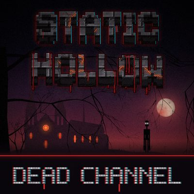
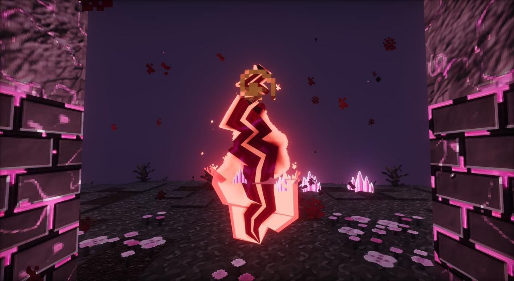

Static Hollow 1.63.3 is for Minecraft 26.3 and comes in two builds that play the same: Fabric (made for shaders, with guns) and Forge. The easiest way in is a CurseForge modpack. Whatever you do, start a new world, and give the game 8 GB of memory.
Quick start
Install the CurseForge app
From curseforge.com, and sign in.
Install the modpack
Search for Static Hollow - Dead Channel in the app and click Install (see the Dead Channel modpack). If you have a modpack as a .zip instead, import it under My Modpacks.
Give it 8 GB of memory
The modpacks ask CurseForge for 8 GB since 1.63.2. If yours doesn't have it: the modpack's ... menu, Profile Options, Allocated Memory. Running short is what causes the stutters.
Play
Launch it from the app. The Fabric packs come with Iris, Sodium and the Photon shader pack already switched on and set up for Static Hollow.
Make a new world
The grey sky, murky water and dark clouds are part of world data, so worlds made with older versions keep their old sky. The oceans two thousand blocks deep and the Hollow's own country (1.62.0) also only come in new worlds; everything else comes to old worlds too.
Find the altar
500 to 1000 blocks from spawn. Follow the blue smoke.
The Static Hollow - Dead Channel modpack

Static Hollow - Dead Channel is the Fabric modpack as it goes up on CurseForge. Version 1.63.3 is for Fabric Loader 0.19.5 and asks for 8 GB. Instead of carrying the mod inside the pack, it downloads it from CurseForge along with the mod's three resource packs, each its own project:
- Static Hollow 1.63.3 (Fabric)
- Static Hollow: HD Models and Static Hollow: Shader PBR, both switched on
- Static Hollow: HD World, installed but left off
- and the same mods as the Fabric modpack below, except Water Erosion and Cinematic Interactions, which aren't on its list.
It sets the same shader (the Static Hollow copy of Photon), the same resource pack order and a render distance of 12 with a simulation distance of 8.
Fabric or Forge?
| Fabric | Forge | |
|---|---|---|
| Loader | Fabric Loader 0.19.5, Fabric API 0.161.0+26.3 | Forge 66.0.9 |
| Mod file | statichollow-fabric-1.63.3.jar | statichollow-1.63.3.jar |
| Modpacks | Static Hollow - Dead Channel (on CurseForge); "Static Hollow (Fabric + Shaders)" when you build it yourself | "Static Hollow" |
| Shaders | Iris and Sodium with Photon, set up and switched on | Need Oculus, which only goes up to Minecraft 26.2 (as of October 2026) |
| The Mended guns | Yes, with TaCZ (in the modpack) | No |
| Streams: Reflowing | Yes | No |
| Puddles & Floods, Water Erosion, Cinematic Interactions | Yes | Yes, as builds made for the pack (none of them has a Forge 26.3 build of its own) |
| Host online without a server | Yes, with the Essential mod | No (Essential is Fabric-only on 26.3); LAN works |
| Story | The same in both. | |
Forge and Fabric players can't share a server. Pick one version for everyone.
What's in the Fabric modpack
- Static Hollow 1.63.3 (Fabric)
- Fabric API 0.161.0+26.3
- Sodium 0.9.2 and Iris Shaders 1.11.7
- Lithium 0.26.2 (faster game logic)
- Entity Culling 1.11.2 (skips drawing creatures hidden behind walls)
- Photon v1.3b, Hysteria v1.2.2 and Insanity v1.650 (shader packs, downloaded unmodified)
- Timeless and Classics Guns: Zero (TaCZ) [Unofficial] Refabricated 1.1.8 for 26.3, and Forge Config API Port 26.3.1, which it needs
- First-person Model 2.7.3 and Not Enough Animations 1.12.6 (your own body in first person)
- Sound Physics Remastered 1.5.1, installed but switched off: since 1.61.1 the mod does every sound's echo and muffling itself (how to switch it back)
- Biomes O' Plenty 26.3.0.0.15 (beta), with TerraBlender 26.3.0.0.9 and GlitchCore 26.3.0.0.5. The Hollow's own biomes come into the world through TerraBlender.
- Serene Seasons 26.1.2.0.7 for 26.3 (beta), with Static Hollow's season settings
- Puddles & Floods 1.1.6
- Water Erosion, ported to 26.3 for this pack
- Streams: Reflowing 2.15.2
- Cinematic Interactions 0.18.7, in a build made for this pack
What's in the Forge modpack
- Static Hollow 1.63.3
- Sound Physics Remastered, installed but switched off, as on Fabric
- Biomes O' Plenty, TerraBlender and GlitchCore
- Serene Seasons
- Puddles & Floods 1.1.6, ported to Forge 26.3 for this pack
- Water Erosion, ported to 26.3 for this pack
- Cinematic Interactions 0.18.7, built for Forge from its Fabric source over a small layer that answers its Fabric calls with Forge's. If one of its changes clashes with Forge's own, that part is skipped rather than the game failing.
What the new mods do in the game is on cold, thirst and the world.
Playing with friends
On a server
Everyone joining uses the matching modpack. The world's land, seasons, puddles and streams are the server's, so those mods go on the server too.
- Fabric: install the Fabric server for Minecraft 26.3 (Loader 0.19.5) and put these in its
modsfolder:statichollow-fabric-1.63.3.jarand Fabric API 0.161.0+26.3- for the guns, Timeless and Classics Guns: Zero 1.1.8 for 26.3 and Forge Config API Port 26.3.1
- Puddles & Floods 1.1.6
- Biomes O' Plenty, TerraBlender, GlitchCore, Serene Seasons and Streams: Reflowing, from CurseForge
watererosion-26.3-sh.1-fabric.jarandcinematic-interactions-0.18.7+statichollow.1-fabric-26.3.jar(in the project's output folder and the modpack's mods)
- Forge: install the Forge 66.0.9 server for Minecraft 26.3 and put these in its
modsfolder:statichollow-1.63.3.jarpuddleflood-1.1.6+26.3-forge.jar,watererosion-26.3-sh.1-forge.jarandcinematic-interactions-0.18.7+statichollow.1-forge-26.3.jar(the last two are in the output folder; all three are in the modpack's mods)- Biomes O' Plenty, TerraBlender, GlitchCore and Serene Seasons, from CurseForge
- Iris, Sodium, Photon and Sound Physics Remastered are client-only: don't put them on the server.
Without a server
Open your world to LAN (Esc, then Open to LAN), or on Fabric host it over the internet with the Essential mod (on CurseForge for Fabric 26.3, client-only). Either way it plays exactly like a server: everyone needs the same version of Static Hollow (and TaCZ, for the guns). Since 1.43.6 everything the mod shows comes from the server, so a friend who joins your world sees what you see.
Shaders
The Fabric modpacks have Photon switched on already. With a shader pack, every glow in the mod (eyes, antenna bulbs, the Saint's Crown orb, runes, portals, beams) shines as a real light with bloom.
- Pick the Static Hollow copy. If Photon v1.3b, Insanity v1.650 or Hysteria v1.2.2 is in your shaderpacks folder, the mod makes a copy of each when the game starts with "-StaticHollow" on the end of its name. Choose that one: its grass and flowers sway as one piece, it knows the mod's garden blocks, and it draws the Void, the Bloom and the Hub properly. The copies are made on your computer for your own use; don't upload them anywhere. Photon is the one made to work with every part of the mod.
- The PBR pack.
StaticHollow-Shader-PBR.zipis a resource pack of LabPBR normal and specular maps for every block: bumpy stone, glossy mud, metal that reflects, light pouring out of torches and lava. The Fabric modpacks switch it on. On Forge, turn it on in Options, Resource Packs, with a shader pack that uses LabPBR materials. - Change the look in Options, Video Settings, Shader Packs, Shader Pack Settings. Too slow? Pick the Medium or Low profile there (the Static Hollow colours, fog and water stay), or lower the shadow resolution to 1024. K turns shaders off, and the mod's own grey sky and fog come back.
- Forge: shaders need Oculus, and as of October 2026 Oculus only goes up to Minecraft 26.2.

The HD packs
Everything is already redrawn at four times normal resolution. Two optional resource packs go further, AI-upscaled to double resolution with Real-ESRGAN and then given their original grit back:
StaticHollow-HD-Models.zip: every creature, their heads, the weapons, armour and items, the cathedral's blocks, the main menu and the effects.StaticHollow-HD-World.zip: every block and item of the look at 128×128, the paintings, the sun and the moon.
Since 1.61.0 the HD pack has the chapter gear (the weapons, the tools and the seven armour sets, held and worn) at four times the mod's own resolution, and since 1.63.1 the Dead Water's blocks and plants at 256 px. Since 1.63.2 its item textures are capped at 512 px, which made the game start faster and stutter less.
- Fabric modpacks: HD-Models is switched on for you. HD-World is installed but left off, because the shader maps are drawn for the normal block size. To try it, go to Options, Resource Packs, move it to the right-hand side below Shader-PBR, and click Done. The modpack sets the pack order (vanilla, Static Hollow, HD-Models, Shader-PBR). In Dead Channel the three packs come as their own CurseForge projects.
- Forge: move both to the right-hand side in Options, Resource Packs. The order doesn't matter.
They need more video memory: if the game stutters, turn HD-World off first. With shaders on, HD-World's blocks use the normal-size bump maps, stretched to fit.
If it runs slowly
- Give the game 8 GB of memory (the modpack's ... menu, Profile Options, Allocated Memory).
- With shaders, lower the shadow resolution to 1024, then the render distance to 10 (the pack sets 12), then turn HD-World off.
- Lower Mipmap Levels in Video Settings.
- Turn off
StaticHollow-HD-World.zip, then HD-Models. - If new chunks are slow to appear on Fabric, pick a lower quality preset in Streams: Reflowing's settings (in the config folder).
- If you switched Sound Physics Remastered back on, turn its rays and bounces down in
config/sound_physics_remastered/soundphysics.properties. - Camera shake and zoom follow your Screen Effect Scale and FOV Effects settings. Hide Lightning Flashes (Accessibility) keeps the main menu's flashes dim.
Building it yourself
For the mod's own project folders:
- Install Java 25 (Temurin, from adoptium.net).
- On Windows double-click
BUILD-MODPACK.bat; on Mac or Linux run./build-modpack.sh. - The
outputfolder then holds the modpack zip (StaticHollow-Fabric-Modpack-1.63.3.ziporStaticHollow-Modpack-1.63.3.zip; import it in CurseForge under My Modpacks), the mod jar by itself (for servers),StaticHollow-Visuals.zip(the texture pack on its own), the HD packs if they were found, and the builds of Water Erosion and Cinematic Interactions made for the pack.
The build starts a test server that loads a new world's data before it makes a modpack, so a version that can't start a world can't be built. If it fails, check build-log.txt.
Testing commands
With cheats on, the Static Hollow creative tab has every spawn egg, head and block, and /statichollow can skip to any part of the story. In Creative, hostile creatures can't hurt you, so test hunting in Survival. /locate structure statichollow:... finds the mod's places, and since 1.63.2 clicking the coordinates it gives you lands you standing beside the place (or on the sea's surface over a drowned one).
| Command | What it does |
|---|---|
/statichollow locate [place] | Where each place is, or when it will come. |
/statichollow underbed, underbed peek | The Underneath comes up under your bed next time you lie down; or watches from under the nearest bed. |
/statichollow bloom open | break | rise | swallow | The green rift opens; the Binding breaks; the Great Bloom rises; it swallows you. |
/statichollow flesh wake | front <days> | load <0-100> | redo | state | The Flesh erupts in front of you; its reach; your infection; and more. |
/statichollow flesh city | lab | shelter [tp | below | vault | power | rebuild] | Rosemont, the Laboratory and Shelter No. 4. |
/statichollow flesh device [build | release] | The Rosemont Device; the Bloom gives the Gardener back. |
/statichollow flesh launch [force | open | mark | fire | detonate | reset] | The launch, step by step. |
/statichollow flesh mutate | nest | horde [size] | horde stop | act | sapro <0-3> | self | Mutations, nests, hordes, the infected's own ways, Sapromyiophilous, the infected you. |
/statichollow guns give mended_smg (or mended_shotgun, mended_marksman) | The Mended guns (Fabric with TaCZ). |
/statichollow ending <test> | Everything from the end of chapter four on. The command suggests them all; they're grouped below. |
The tests for /statichollow ending, by part of the story:
| Part | Tests |
|---|---|
| Chapter four's end and chapter five | status, start, sites, parts, gun, strike, feed, starve, ritual, omni, reclaim, back, hounds, broodme, hollow, chapter5, relayhere, amalgam, relaycore, nullhere, afterimage, fragments, reel, lateshow, nullopen, nullzone, carrierhere, signoff, ruins, hushhere, stoneshere, choirhere and their resets |
| The outbreak (1.48–1.52) | infest (the nearest creature has one in it), infest25 / infest50 / infest75 / infest95 (that far along), infestturn, infestall (everything within 24 blocks turns), infestinfo, infestcure, biomass |
| The Hive (1.50, 1.53) | hivehere (the hive 52 blocks ahead of you), hivespeak, hivemind, hivefight, hivenode, hivedown, hiveskip, hivereset, hive, hivehands; aftermathnow, aftermath, aftermathreset, endopen, endseal |
| The Deep (1.54) | deep, sinkholehere, deepdown, deepup, tremor, groundgives, blister, reach, holesheal, marrow, halls, nest, heart, listenerhere, kinghere |
| The Stalls (1.56) | stalls, unseal, reseal, doornow, stallsgo, stallshome, stallsbuild, house (every seat filled again), pour (the house gets up), crowdhere, crowdkill, crowdreset, frontrow, frontrowskip, audiencehere, usherhere, picture |
| The Vault (1.57) | vault, vaultopen, vaultgo, vaulthome, vaultbuild, vaulttuned, watchnow, watchskip, keepsopen, keepall, projcome, projhere, projkill, projreset, firstreel, firstreelskip, tunedhere, rerun0–rerun3, vaultdark, vaultlight, show0–show7 |
| The Other Side (1.58) | other, otheropen, othergo, otherhome, otherbuild, curtainnow, curtainskip, viewerstart, viewerheart, viewercarrier, viewerhold, lastshowskip, otherreset, standinhere, seenme, otherdoor |
| The Hub (1.59) | hub, hubgo, hubhome, hubbuild, hubnow, hubskip, encore, landing, hubreset, remote, replay0–replay5, replays, replaykill |
| The Dead Water (1.62, 1.63) | realm, realmgo, rigbuild, rigprep, rigland, realmreset, realmstrand, realmfix; in the Dead Water, subgo (to the submarine), subbay (the sub bay built again, a submarine in it), sr_<place> (one of its places set down on the sea floor under you; searuins lists them) and undertow (it comes up for you, close) |
| Cold and thirst (1.62) | vitals, vitalscold, vitalshot, vitalsdry, vitalsreset |
To reset the haunting for a world: close it and delete statichollow.properties in its save folder.